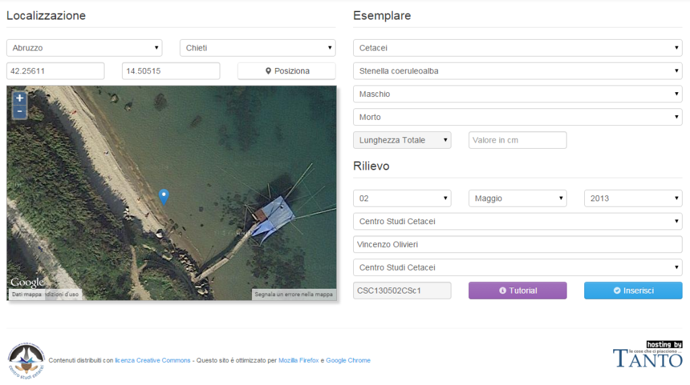
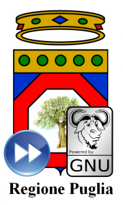
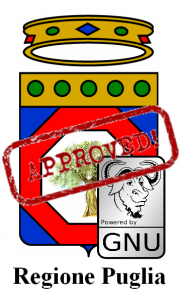

Verso la fine del 2011 nella mia casella di posta elettronica trovai un invito per una conferenza dal titolo “Gli squali nel Mediterraneo”, che si sarebbe tenuta di lì a pochi giorni a Pescara.
Ormai non ricordo più se il titolo fosse davvero quello, né chi fosse il mittente della mail, fatto sta che decisi di andare, spinto in gran parte dalla voglia di passare – dopo anni – una giornata ad ascoltare discorsi di biologia marina “pura” e prendermi una pausa dalle solite cose: gis, json, rest, php, cors, script, sql, ecc.
Dell’intervento principale sugli squali ricordo poco o nulla, non mi colpì granché, ma ricordo bene l’intervento del dottor Vincenzo Olivieri, veterinario e presidente della Onlus “Centro Studi Cetacei” (CSC), che non parlò di squali, ma di spiaggiamenti di cetacei, dei casi di studio più interessanti che aveva incontrato, di indagini sul campo e metodologie analitiche, del lavoro svolto dalla sua associazione e di tanto altro. Ciò che mi fece drizzare le orecchie, man mano che andava avanti, fu pensare alla quantità di dati – dati spaziali, probabilmente – che il Centro Studi Cetacei poteva (e doveva!) aver raccolto.
Le domande che avevo in testa erano: “Dove li terranno questi dati?”, “In che formato saranno conservati?”, “Saranno disponibili?”, “Saranno accessibili?”.
Al termine della conferenza andai dritto da Olivieri, parlammo una decina di minuti e venne fuori un accordo, direi uno scambio: il Centro Studi Cetacei mi avrebbe fornito i dati sugli spiaggiamenti dopo averli riordinati e organizzati il meglio possibile, visto che erano sparsi in vari fogli Excel, documenti PDF e addirittura qualche scheda cartacea e io avrei sviluppato, senza costi per il CSC, uno strumento informatico per consultarli in maniera semplice e veloce sul web. In cambio chiesi che il risultato di questo nostro sforzo congiunto fosse messo a disposizione come open data.
Ci tengo a sottolineare che questa mia richiesta venne accolta immediatamente e con entusiasmo, segno di un’apertura mentale da parte del mio interlocutore che, ancora oggi, non so quanto sia facile trovare tra i non addetti ai lavori.
Pronti, si comincia!
La primissima fase consistette in una serie di incontri con Vincenzo e con altre persone del CSC; il nostro obiettivo era individuare un minimo comune denominatore nelle informazioni in loro possesso e, partendo da qui, organizzare lo storico in maniera coerente e il più possibile ordinata.
Successivamente fu la volta di scegliere gli strumenti informatici da usare per dare vita al nostro progetto e, non avendo vincoli se non mantenere a zero i costi dell’operazione, decisi per uno stack tecnologico collaudato e completamente open source: PostGIS, GeoServer e OpenLayers. A dire il vero penso che questa sarebbe stata la mia scelta anche se avessimo avuto un budget da spendere!
Scelto lo stack, restava però il problema di mettere in piedi un server. Come molti di voi sapranno, anche se installato con solo software libero, un server ha comunque dei costi legati all’hardware e alla connettività, il che cozzava non poco con il vincolo del costo zero.
Ebbene, senza TANTO e Andrea, al quale parlai del progetto il giorno dopo la conferenza, l’idea sarebbe rimasta nella mia testa, inespressa nella pratica o, al massimo, sarebbe diventata l’ennesima demo in “localhost” sul mio computer.
Il server, alla fine, ce lo ha messo TANTO! Un hosting non da poco, con PostGIS e GeoServer belli e pronti, Apache e PHP per creare pagine web e, soprattutto, persone competenti a gestire l’infrastruttura.
A questo punto, con i dati che iniziavano a prendere forma ed il server pronto ad accogliere l’applicazione, per me era finalmente ora di entrare nel vivo e tirarmi su le maniche per produrre qualcosa di tangibile da mostrare a Vincenzo e al CSC che, nel ripulire, organizzare e armonizzare i dati storici, avevano passato parecchi giorni a lavorare.
Così all’inizio del 2012 venne fuori il primo output, un’applicazione di web mapping strutturata in maniera abbastanza classica e in grado di mostrare i punti dove erano stati effettuati i rilievi sugli animali spiaggiati e le informazioni ad essi associate su una mappa, una griglia ordinabile e dei grafici. Scegliemmo di chiamarla GeoCetus.
I dati potevano essere filtrati su base annuale, adeguando le tre viste di conseguenza. Selezionando un punto, come lecito aspettarsi, compariva una scheda con tutte le informazioni di dettaglio ed era possibile scaricare tutti i dati disponibili in formato KML e CSV, ovviamente sotto licenza CC BY-SA. Nulla di eclatante, insomma, ma funzionale.
Questa prima versione si basava su una sola tabella PostGIS, denominata “spiaggiamenti”, un po’ di codice PHP per tirare fuori un GeoJSON – preferii non scomodare GeoServer in prima battuta – e la mia collaudata cassetta degli attrezzi JavaScript composta da OpenLayers 2.12, jqGrid e Google Charts.
Un buon inizio, ma serve sempre qualcosa in più
L’applicazione di web mapping prodotta non era male, nel senso che faceva quello che doveva fare in base ai requisiti concordati con il CSC e lo faceva discretamente: mostrava i dati e consentiva di interrogarli e scaricarli.
Ben presto, però, sorse la necessità di aggiornare la banca dati in modo che fosse sempre attuale ed utile, così pensai di ricorrere ad un foglio di calcolo su Google Drive. I nuovi dati sarebbero stati inseriti lì e poi, tramite uno script Python, trasferiti in PostGIS con una query SQL.
Lo script funzionava senza particolari problemi, però lasciava irrisolte due questioni importanti:
vincolare alcuni campi ad un dominio specifico di valori;
calcolare automaticamente il codice identificativo di ogni evento registrato, il quale doveva seguire uno schema preciso per non violare il vincolo di univocità.
Probabilmente lavorando un po’ di più allo striminzito script Python che avevo prodotto si sarebbe potuta trovare la soluzione ad entrambi i problemi, ma ho preferito creare qualcosa che girasse completamente sul nostro server e sviluppare un modulo gestionale in PHP con interfaccia basata sull’ottimo Twitter Bootstrap (all’epoca la versione stabile era la 2.3.2). Dopo qualche giorno di lavoro venne fuori il prototipo del modulo gestionale:

Questo modulo, accessibile solo agli utenti registrati sul database, costituiva uno strumento di facile utilizzo, tramite il quale chiunque poteva registrare un nuovo spiaggiamento senza incappare in errori grossolani, di distrazione e senza doversi preoccupare del codice di registrazione, che veniva compilato in automatico dal modulo stesso, sulla base delle regole stabilite.
Problema risolto? Certo che no! Le esigenze, man mano che GeoCetus e il suo modulo gestionale venivano utilizzati, divenivano ben maggiori del semplice consultazione e inserimento di nuovi dati. Occorreva spesso correggere o cancellare qualcosa e sarebbe stato bello anche poter allegare dei file per caratterizzare meglio i rilievi registrati.
Inoltre, nel frattempo, era saltata fuori anche la necessità di gestire i dati sulle tartarughe marine.
Come spesso accade, l’appetito viene mangiando.
GeoCetus diventa un portale
Per organizzare al meglio tutti le funzioni e i moduli previsti la cosa migliore era, sicuramente, ripensare l’applicazione in forma di un portale, così, dopo qualche mese di lavoro e svariati aggiornamenti a librerie e script vari, il risultato è quello che tutti possono vedere puntando il browser a questo indirizzo: http://geocetus.spaziogis.it.
Il portale prevede diverse tipologie di utenti, che hanno prerogative diverse sulla gestione dei dati e degli allegati. Ad ogni evento inserito sotto forma di punto è possibile associare fino a 3 foto e 3 documenti in formato PDF relativi a necroscopie ed analisi di laboratorio; a breve sarà possibile collegare anche dei filmati. Tutti i contenuti sono aperti, distribuiti sotto licenza CC BY-SA e messi a disposizione degli interessati sia sotto forma di servizi OGC che dei più comuni formati di file usati in ambito di geodati.
Ora, piuttosto che annoiarvi con l’elenco particolareggiato delle caratteristiche del portale, vi invito a consultare lo slideshow in calce al post e, soprattutto, a visitarlo in prima persona.
Piuttosto, mi preme dire che, per quanto ne so, ad oggi, quella di GeoCetus è la più completa banca dati sugli spiaggiamenti di cetacei e tartarughe marine dell’intero panorama nazionale, che si tratta di una banca dati libera ed accessibile e che, questo risultato, per quanto sia ancora passibile di miglioramenti, è stato raggiunto da un gruppo di volontari. Abbiamo investito parte del nostro tempo libero per dare vita a un progetto che, speriamo, diventi un riferimento per gli addetti ai lavori e, soprattutto, contribuisca ad innescare un clima virtuoso di collaborazione e condivisione delle informazioni anche da parte di altri soggetti.
Questo post è dedicato a Francesco, il mio nipotino più grande, all’uomo che sarà nel futuro.
Caro Franci,
la mamma mi ha appena scritto che da te piove e che stai scrivendo – tanto per cambiare – del codice. Allora mi è venuto in mente che, anche se hai da poco compiuto vent’anni, è arrivato il momento di raccontarti una storia, che non voglio si perda nella mia memoria e rimanga anonima. Metti da parte le tue incomprensibili stringhe di testo, spegni un attimo il tuo strano “coso” informatico (io sono nato nel millennio precedente e continuerò ad usare il mio vecchio tablet), stampala e leggila con calma.
Poco più di dieci anni fa lo zio Andrea, insieme ad altre 5 persone, ha scritto le ” Linee Guida per le attività sugli Open Data della Città di Palermo“. E’ proprio grazie (anche) a questo, che oggi dal tuo tavolo di Berlino puoi connetterti ai Linked Open Data del Comune di Palermo, incrociarli con i dati ISTAT e OpenStreetMap e scrivere la tua applicazione ”Il bello di Palermo” (come farei senza la tua app!). Lo so, non ci crederai, perché “lo zio è bravo soltanto a mettere pallini su mappe e a perseverare a usare twitter”.
Tutto inizia nel febbraio del 2013 quando, con un altro degli autori delle linee guida – Gerlando Gibilaro il mio amico avvocato che crede di sapere usare il PC (noi li chiamiamo ancora così) – decidemmo di partecipare all’Open Data Day di Palermo (eravamo una trentina, mica i tremila di Berlino di #oddit25), in cui fu presentata per la prima volta la sezione Open Data del sito del Comune. Eravamo come sempre con penna e carta in mano, e a manifestazione finita tornammo a casa abbastanza scoraggiati e con i nostri appunti in tasca. Rimanemmo con atteggiamento “monitorante” – un giorno ti racconterò di Luigi e di Monithon – e a distanza di pochi mesi insieme decidemmo di scrivere un post su TANTO (a proposito quando me lo sistemi il widget social?), in cui evidenziammo come dal giorno della presentazione tutto fosse inalterato sia in termini di quantità, sia – soprattutto – di qualità. Fu un post molto letto (nei limiti ovviamente della piccola nicchia interessata) specie a livello nazionale; a Palermo ebbe un po’ di eco, principalmente perché pubblicato da Giulio Di Chiara – un altro degli autori delle linee guida – sul tuo amato mobilitapalermo. Aldilà del numero dei lettori, continuo a pensare che quel post fu una delle cause che portò Marco Alfano (anche lui un autore) – consulente del Comune sul tema – a telefonarmi ed invitarmi alla prima riunione ufficiale sugli Open Data. A questa erano presenti circa una quindicina di persone, ma di molte si persero rapidamente le tracce; così come avvenne del cosiddetto “gruppo opendata” – aperto sul mitico Google Groups – che si dissolse dopo poco tempo.
Di incontro in incontro, fatti in orari ed in giorni improbabili, e di email in email (per darti un’idea di quei mesi di lavoro ho fatto questo screenshot per te) si decise di concentrarsi sulla redazione di un documento di linee guida, in quanto ritenuto uno strumento strategico e propedeutico alla corretta realizzazione di un’azione Open Data. Un testo che non definisse soltanto la strategia che avrebbe dovuto tenere la nostra istituzione cittadina, ma che definisse anche gli aspetti tecnici (processo di pubblicazione dei dati e loro riutilizzo), l’organizzazione interna, gli obiettivi, le azioni e i tempi. L’obiettivo era arduo e probabilmente non lo raggiungemmo in pieno, ma per fortuna ci potemmo appoggiare “sulle spalle dei giganti” e fare riferimento in modo chiaro ad altre pubblicazioni già fatte sulla materia (una tra tutte “Linee guida nazionali per la valorizzazione del patrimonio informativo pubblico” dell’Agenzia per l’Italia Digitale); i riferimenti chiari furono – non so perché – rimossi dal documento originale da noi scritto, e quello ufficiale pubblicato sembra in alcune parti una di quelle (rare per fortuna) tesi di laurea con porzioni di testo copiate senza citare la fonte (ok, non ti faccio la solita ramanzina sul fatto che la forma è sostanza, e sulla Creative Commons 8).
Con tutti gli autori del documento – non ti ho citato ancora Davide Taibi, Ciro Spataro e Francesco Passantino - ci lanciammo in una difficile e lunga scrittura a più a mani che portò alla stesura di un documento che per alcuni aspetti fu (per quei tempi) speciale.
La cosa più bella e interessante – scusami se mi sparo un po’ di pose – fu la modalità con la quale furono realizzate. Io conoscevo bene soltanto uno degli autori del documento, altri due erano per me degli sconosciuti, e dei restanti avevo una conoscenza superficiale. Ci tenne insieme la voglia di arrivare all’obiettivo.
Fu una cosa fatta totalmente dal basso, da cittadini volontari, in modo informale, senza budget ed in tempi che si possono considerare rapidi, considerato (questo) il contesto. Questo ovviamente grazie anche all’azione del Comune di Palermo che, ricevuto da noi il documento, lo approvò in poche settimane. Ne approfitto per citarti altre persone che ebbero un ruolo in questa storia: Giusto Catania, Giuseppe Meli e Sergio Maneri, che con vari ruoli - per il Comune di Palermo – sono stati i nostri interlocutori principali e gli attuatori della cosa.
Un altro aspetto unico nel suo genere (per l’Italia) di quel documento fu la presenza di pietre miliari temporali, che fissavano dei paletti per la realizzazione di determinati obiettivi. Il Comune mostrò coraggio e recepì questa sezione del documento senza alcuna variazione. A proposito di variazioni voglio sottolinearti quanto venne ben considerato il nostro lavoro e come non venne fatta dalla Pubblica Amministrazione alcuna integrazione, estensione o modifica del testo che consegnammo. Furono effettuate soltanto alcune cancellazioni (consentimi, ma non le posso mettere alla stregua di modifiche) così come puoi vedere in questo documento in cui sono evidenziate le differenze tra il testo da noi consegnato e quello approvato.
Lo so, la sto facendo lunga, e sono il solito “zio Andrea noioso”. Volevo però fissare la cosa, e dargli i giusti contorni. Avrei potuto scrivere dell’altro, e di come quell’esperienza mi lasciò anche dell’amaro in bocca. Ma è Natale e confido nella tua sensibilità di lettore
Sono passati circa dodici anni, e l’orgoglio per essere stato parte attiva di questa cosa è immutato. Anzi forse è maggiore, perché vedere un nipotone che dopo anni ne raccoglie alcune delle conseguenze mi riempie il cuore di gioia. Adesso fai riposare un po’ gli occhi e vai a farti una bella passeggiata in Alexplatz, (tu che puoi)!
Ricorderete abbiamo già parlato della L.R. 20/2012 “Norme sul software libero, accessibilità di dati e documenti e hardware documentato”. Con Delibera di Giunta Regionale n. 2183 del 31 ottobre scorso la Regione Puglia compie un ulteriore passo avanti, definendo i primi concreti indirizzi verso l’adozione istituzionale degli open data. Il provvedimento parla espressamente di open government e riprende altri due importanti documenti istituzionali, ovvero la “Strategia regionale per la Società dell’Informazione 2007-2013” (approvato con DGR n. 508/2010), e la “Strategia regionale della smart specialization” (approvato con DGR n. 1468/2012).
E’ interessante mettere in evidenza alcuni punti salienti della DGR, nello specifico:
[...] possono già essere avviate le azioni necessarie ad attuare quanto previsto dall’art.6 [della L.R. 20/2010] in materia di “riutilizzo dei documenti e dei dati pubblici”, in quanto sussistono:
- il notevole patrimonio informativo prodotto nel tempo dalla Regione Puglia, dalle sue Agenzie e Società in house oltre che da tutti gli altri soggetti pubblici e privati cui la legge regionale si riferisce;
- la consistenza della quantità di informazioni e documenti già pubblicati on line e disponibili nei diversi portali istituzionali, riferiti sia ad attività ordinarie e ad obblighi di legge che alle scelte operate in materia di Trasparenza;
- l’opportunità data, quindi, di procedere alla creazione della piattaforma dei dati aperti (Open Data) della Regione Puglia e alla promozione delle basi di dati prodotte, come leva strategica su cui puntare per creare nuove opportunità di crescita e trasparenza.
[...]
è invece necessario avviare un processo istruttorio complesso e partecipato per dotarsi del previsto Piano triennale di informatizzazione, che definisca la strategia dell’Ente in ambito informatico e del programma triennale per la promozione di progetti di ricerca, sviluppo e produzione relativi al software libero e all’Hardware documentato.
[...]
Considerato, inoltre
- che è necessario attivare azioni che producano valore aggiunto alla generazione e disponibilità di open data, per sostenerne e diffonderne un utilizzo attivo;
- che bisogna creare i presupposti per la realizzazione di un modello di open government basato sul libero accesso ai dati pubblici e di un acceleratore economico per il territorio,
in particolare:
- integrare la visualizzazione degli open data nel ciclo delle politiche pubbliche (nelle fasi di disegno, implementazione e valutazione) al fine di migliorarne la qualità stimolando l’intelligenza collettiva anche attraverso le proposte commentabili, la modellazione d’impatto, la raccolta di feedback e la valutazione partecipata;
- incentivare le aziende a riutilizzare, anche a scopi commerciali, le informazioni pubbliche e a creare applicazioni innovative basate su questi dati;
- che, quindi, è opportuno avviare prime sperimentazioni, valutarne i risultati e valorizzarne le buone prassi individuate.
Alla Direzione dell’Area Politiche per lo Sviluppo economico, il Lavoro e l’Innovazione viene affidato il coordinamento generale per l’attuazione della L.R.20/2012 e la creazione del futuro portale regionale degli open datawww.dati.puglia.it nel quale confluiranno tutti i dati aperti delle strutture regionali (e non solo, si spera). Altra nota di rilievo è l’esplicita adozione della licenza IODL 2.0 sponsorizzata da www.dati.gov.it sebbene non sia ancora stata adottata ufficialmente dalla normativa dello Stato. Si tratta sostanzialmente di una CC-BY.
Infine la Regione Puglia si impegna ad avviare “prime sperimentazioni che puntino a qualificare l’utilizzo dei dati aperti come strumento di open government, attraverso percorsi partecipati” anche dedicati alle imprese innovative e alle startup giovanili che puntino al riuso dei dati aperti e alla replicabilità delle buone prassi.
Finalmente il DdL “Norme sul software libero, accessibilità di dati e documenti ed hardware documentato” è stato approvato per essere convertito in legge nella seduta del Consiglio della Regione Puglia di ieri. A questo link è possibile accedere all’iter di approvazione e i relativi documenti, tra i quali il testo dell’articolato privo degli emendamenti approvati in Consiglio Regionale.
E’ un provvedimento che seguiamo da tempo, del quale esattamente un anno fa avevamo già fatto una analisi tesa a metterne in evidenza i punti di forza, e qualche debolezza, e per il quale ci eravamo auspicati miglioramenti soprattutto per il riuso aperto e libero dei dati pubblici. Del resto in un altro precedente articolo a commento di uno degli altri due DdL su software e dati aperti, avevamo addirittura proposto degli emendamenti, che definivano con maggiore precisione proprio il concetto di open data e relativo riuso, auspicando l’adozione di linked open data, dato che parlavamo di rintracciabilità dei dati da parte dei motori di ricerca su internet e lo scaricamento dai siti web istituzionali delle Pubbliche Amministrazioni.
In tal senso possiamo comunque ritenerci soddisfatti, poiché nel testo approvato definitivamente in Consiglio ieri è stato inserito l’articolo 6 “Riutilizzo dei documenti e dei dati pubblici”, nel quale si fa riferimento al D.Lgs. 36/2006 di recepimento della Direttiva 2003/98/CE relativa al riutilizzo di documenti nel settore pubblico (c.d. Direttiva PSI). In fondo all’articolo trovate alcuni utili riferimenti per approfondire il tema.
L’impianto del DdL nella versione della quale avevamo parlato un anno fa è stato arricchito e potenziato dal nuovo articolo 17, che istituisce una “Comunità di pratica”, aperta alle Università e al partenariato economico e sociale, e che si pone obiettivi estremamente ambiziosi:
promuovere lo scambio, la diffusione e il riuso di esperienze, progetti e soluzioni relativi al software libero nella PA e nelle imprese;
creare ed aggiornare una mappa delle richieste, delle competenze e delle esperienze disponibili sul territorio codificandole in specie digitali (?);
promuovere attività di informazione dirette alle amministrazioni locali ed alle piccole e medie imprese del territorio regionale, sostenendo modalità di collaborazione tra Università, associazioni ed imprese;
creare una rete di soggetti, informatici ed utenti impiegati nella PA, utilizzatori privati, sviluppatori, PMI, studenti, collegata agli obiettivi ed alle strategie del Centro di competenza sull’open source (NdR – nel DdL per la verità tale Centro non viene istituito, forse derivato dal testo della L.R. 11/2006 della Regione Umbria che in effetti ha istituito un CCOS);
contribuire alla individuazione di un adeguato percorso formativo ed universitario, per la preparazione professionale di esperti in software libero, e diretto alle scuole primarie e secondarie per la diffusione di una cultura del software libero;
confrontare tecnicamente fra loro le architetture dei differenti progetti di sviluppo software per contribuire affinché siano comunque sempre conseguiti gli obiettivi generali di interoperabilità, uso di standard aperti, scalabilità nel tempo e semplicità di riuso da parte delle Pubbliche Amministrazioni;
promuovere lo studio di fattibilità di sistemi Cloud Computing per la Pubblica Amministrazione tali da poter permettere la distribuzione di risorse di calcolo, archiviazione, software e umane per diversi utilizzatori e scopi.
Gli emendamenti approvati in Consiglio
Durante i lavori della seduta consiliare sono stati inoltre approvati cinque emendamenti, che di fatto vanno a rafforzare l’impianto del testo. Tra i più significativi, il primo fa esplicito riferimento all’open government, come forma di partecipazione attiva dei cittadini al processo decisionale attraverso l’adozione e diffusione degli open data. Il terzo emendamento entra nel merito del Piano d’informatizzazione, con alcuni ulteriori commi inseriti nell’articolo 9 (prima presenti nell’articolo 10, soppressi da un altro emendamento) che opportunamente definiscono in dettaglio i criteri che devono caratterizzare la valutazione tecnica-economica riguardante l’adozione da parte della PA regionale di soluzioni basate su software libero e il loro riuso.
In conclusione, non possiamo che congratularci con la Regione Puglia per l’adozione di questa Legge, che la pone davvero all’avanguardia nella valorizzazione e promozione sia del software libero che degli open data. Il prossimo importante passo sarà la rapida adozione Piano d’informatizzazione, il vero strumento di attuazione della nuova Legge Regionale.
Infine, speriamo ora che il SIT Puglia adegui al più presto le licenze di uso dei dati geografici, rendendoli realmente riusabili in maniera aperta e libera a tutti.
Approfondimenti sul riuso dei dati pubblici
Comunicazione CE “Dati aperti - Un motore per l’innovazione, la crescita e una governance trasparente” (link)
EPSIplatform, la piattaforma europea sull’informazione nel settore pubblico (link)
L’Assessorato all’Assetto del Territorio della Regione Puglia ha organizzato presso InnovaPuglia tre giornate seminariali intitolate “Sistema Informativo Territoriale regionale (SIT) per la semplificazione delle procedure e il raccordo amministrativo” qui programma e scheda di adesione. L’iniziativa ha come obiettivo quello di illustrare le numerosissime funzionalità, servizi e prodotti messi a disposizione dal SIT Puglia, rivolti alle Pubbliche Amministrazioni ma anche a professionisti e cittadini.
Il primo appuntamento – al quale ho partecipato – è stato il 29 giugno scorso. Durante la prima parte la responsabile del SIT Puglia Tina Caroppo ha illustrato i servizi di download e consultazione dei dati topografici, tematici e storici, quelli relativi a PUTT/p e Piano Regionale delle Coste, e le funzionalità dedicate esclusivamente ai soggetti pubblici quali Comuni e Province coinvolti direttamente in svariati procedimenti autorizzativi, come il rilascio delle autorizzazioni paesaggistiche e quelle relative agli impianti di produzione energetica.
La Regione Puglia infatti ha puntato già da tempo sul coinvolgimento diretto degli Enti Locali riguardo la pianificazione condivisa e partecipata, ad esempio offrendo un importante supporto ai Comuni – proprio mediante il SIT regionale – per la redazione dei Piani Urbanistici Generali (PUG).
La stessa Regione è inoltre sempre tesa ad ampliare la base di dati territoriali, tanto che a febbraio scorso ha presentato l’ortofoto 2010 acquisita da AGEA, messa a disposizione sempre mediante il SIT. Ne ho parlato in un altro articolo su TANTO, nel quale avevo sollevato anche il problema di una licenza sui dati cartografici regionali che attualmente ne impedisce l’uso da parte dei professionisti per il proprio lavoro. Sono passati dei mesi, e l’occasione di questo seminario mi è sembrata utile per capire quale fosse l’orientamento per risolvere la questione, poiché i disclaimer sono rimasti gli stessi. Tina Caroppo ha risposto facendo presente che l’intenzione della Regione è senz’altro quella di consentire il riuso libero dei dati, ma si è in attesa che il disegno di Legge Regionale su open source e open data (altro argomento che TANTO segue da tempo) venga definitivamente approvato in Consiglio regionale.
Le altre due giornate, previste per il 5 e 6 luglio prossimi, hanno come obiettivo quello di fornire a personale delle Pubbliche Amministrazioni e a professionisti, il know how per poter utilizzare i dati e i servizi cartografici erogati dalla Regione Puglia con software GIS open source. Sono anche previste esercitazioni pratiche per l’applicazione delle istruzioni tecniche per l’informatizzazione dei PUG.
Si tratta dunque di una importantissima e meritoria iniziativa alla quale ci si aspetterebbe partecipassero tutti i Comuni e le Province pugliesi. Tra l’altro pare sia prevista una seconda serie di seminari per garantire proprio questa possibilità.
Insomma, la Regione Puglia si conferma estremamente motivata nel voler rendere i geodati dei quali è responsabile realmente apertie (ri)usabili a tutti. La questione open data (che ricordiamo non consiste solo nell’adottare formati aperti, ma anche licenze aperte) verrà dunque risolta con l’emanazione della Legge Regionale della quale si parlava. L’attuale adozione di uno standard aperto (WMS nello specifico) da parte del SIT Puglia ne consente comunque l’utilizzo già ora con qualunque software GIS, proprietario o OS.
Solo una breve chiosa riguardo il clima nel quale si è svolto l’incontro, piuttosto scolastico invero, che ha generato un episodio paradossale nel quale io – che anziché prendere appunti con lapis e notes lo facevo con Google Drive e usavo Tweetdeck per informare sui lavori – c’è mancato poco che andassi a finire dal preside, ripreso come uno scolaretto un po’ discolo. Ma sono gli imprevisti del mestiere…
Lezioni online per spiegare scienza e tecnologia Oilproject organizza con l’Istituto Italiano di Tecnologia una serie di lezioni divulgative su neuroscienze, nanotecnologie, farmacologia e macchine intelligenti, per raccontare al grande pubblico lo stato dell’arte della ricerca di base e applicata. Qui tutti i dettagli. Leggi tutto... (0)
Il GFOSS Day 2011 è a Foggia I prossimi 24 e 25 novembre l’Università degli Studi di Foggia ospiterà il GFOSS DAY 2011, organizzato come di consueto dall’Associazione Italiana per l’Informazione Geografica Libera GFOSS.it Leggi tutto... (1)
Mappali, denunciali e... tassa.li Tassa.li è una interessante startup realizzata da un gruppo di giovani tecnologi, con l’intento di rendere facile la denuncia di esercizi commerciali che non rilasciano il regolare scontrino fiscale. E in un periodo nero come questo, molta gente avrà una gran voglia di partecipare. Grazie a una applicazione disponibile sia per iOS che Android, è infatti possibile in pochi clic geotaggare l’esercizio e riportare la somma dello scontrino non emesso. Il tutto in maniera assolutamente anonima. E questi ragazzi dimostrano di vedere molto lontano, perché presto rilasceranno i dati raccolti in forma totalmente aperta e libera. (7)
TANTO non rappresenta una testata giornalistica ai sensi della legge n. 62 del 7.03.2001, in quanto non viene aggiornato con una precisa e determinata periodicita'. Pertanto, in alcun modo puo' considerarsi un prodotto editoriale.


{kind=link}